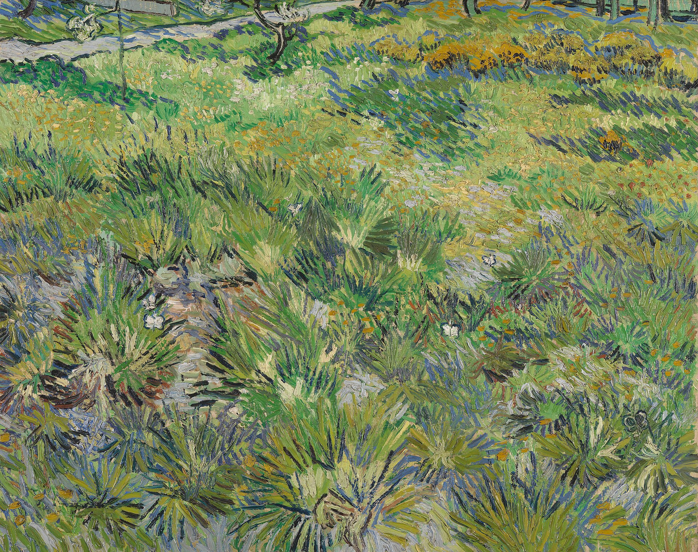

长草与蝴蝶 Long Grass with Butterflies
梵高 · 1890年 · 伦敦国家美术馆
Vincent van Gogh · 1890 · The National Gallery, London
图片：Wikimedia Commons，公有领域 / Image: Wikimedia Commons, public domain

发现 · Discover
疗养院的花园 The asylum garden
这是圣雷米圣保罗疗养院花园里的一片草地。梵高在这里住了一年。
This is a patch of meadow in the garden of the Saint-Paul asylum at Saint-Rémy, where Van Gogh stayed for a year.
三只蝴蝶 Three butterflies
草间藏着三只蝴蝶，不太容易一眼看到。找到它们之后，整幅画就动了起来。
Three butterflies are hidden in the grass, not easy to spot at first. Once you find them, the whole painting comes alive.
春天的草 Spring grass
画面几乎全是长长的、茂盛的春草，只有一角隐约露出一条小路。
The picture is filled almost entirely with long, lush spring grass; only a trace of a path appears in one corner.
近看自然 Nature up close
这种近距离画一小片自然的方式，在文艺复兴和17世纪荷兰绘画里都有先例；梵高也可能受到了他读到的日本文化的影响。
Painting a small patch of nature up close had precedents in Renaissance and 17th-century Dutch art; Van Gogh may also have been inspired by what he read about Japanese culture.
离开之前 Before leaving
这是梵高在圣雷米画的最后几幅画之一。两周后，他就离开了疗养院。
This is one of the last paintings Van Gogh made at Saint-Rémy. Two weeks later, he left the asylum.
同一个花园 The same garden
一年前，他刚来到这里，就在同一个花园里画了《鸢尾花》。
A year earlier, just after he arrived, he had painted Irises in this same garden.
故事 · The story
ACT I 第一幕 · 最后的春天 The last spring
1890年春天，梵高在圣雷米疗养院已经住了将近一年。他走进花园，画下了一片长满草的角落。
In spring 1890, Van Gogh had been at the Saint-Rémy asylum for almost a year. He went out into the garden and painted an overgrown corner.
1890年4–5月 · 伦敦国家美术馆 / April–May 1890 · The National Gallery, London
ACT II 第二幕 · 草里的蝴蝶 Butterflies in the grass
画里几乎只有草，但仔细看，有三只蝴蝶在草间飞。
The painting is almost nothing but grass. But look closely, and three butterflies are flying among it.
1890年4–5月 · 伦敦国家美术馆 / April–May 1890 · The National Gallery, London
ACT III 第三幕 · 出发 Setting off
1890年5月16日，他离开了疗养院，希望自己已经痊愈。他先去巴黎看望提奥，然后去了奥维尔。
On 16 May 1890, he left the asylum, hoping he was cured. He went first to see Theo in Paris, then on to Auvers-sur-Oise.
1890年4–5月 · 伦敦国家美术馆 / April–May 1890 · The National Gallery, London
一片草，三只蝴蝶，一个春天。 A patch of grass, three butterflies, one spring.
作品档案 · Artwork record
| 画家（生卒年） · Artist (dates) | 文森特·梵高（1853–1890） / Vincent van Gogh (1853–1890) |
|---|---|
| 画名 · Title | 长草与蝴蝶 / Long Grass with Butterflies |
| 年份 · Date | 1890年4–5月，圣雷米 / April–May 1890, Saint-Rémy |
| 材质 · Medium | 布面油画 / Oil on canvas |
| 尺寸 · Dimensions | 64.5 × 81 cm |
| 收藏地 · Collection | 伦敦国家美术馆，43号展厅 / The National Gallery, London, Room 43 |
| 来源说明 · Credit line | 1926年用考陶尔德基金购入（编号 NG4169） / Bought, Courtauld Fund, 1926 (NG4169) |
关于画家 · About the artist
文森特·梵高（1853–1890），荷兰画家。他将近27岁才开始画画，短短十年留下了大量作品。1888年他来到法国南部的阿尔勒，在那里画出了许多最著名的画。
Vincent van Gogh (1853–1890) was a Dutch painter. He began painting at around 27 and left a huge body of work in just ten years. In 1888 he moved to Arles in the south of France, where he painted many of his best-known works.
更多梵高的画 · More by Vincent van Gogh